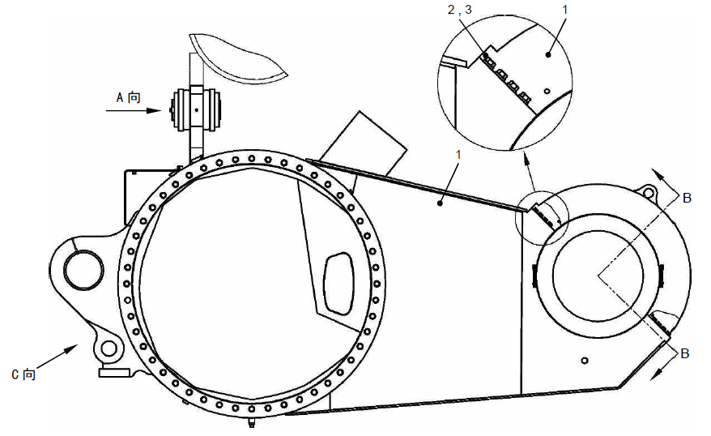
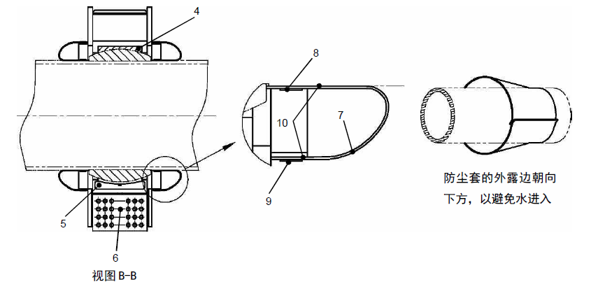
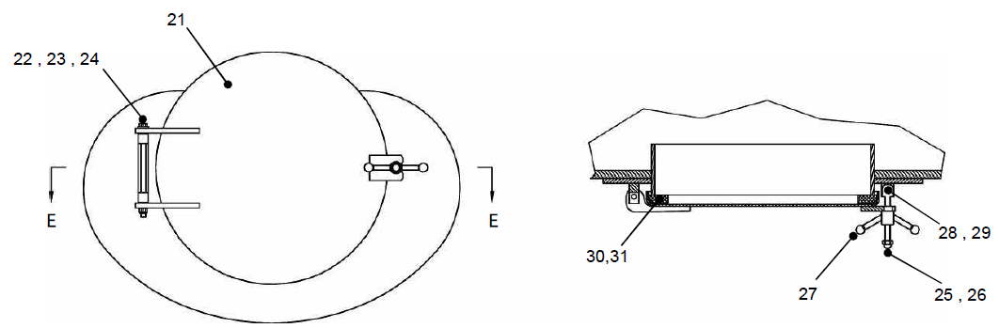

桥箱及安装. · REAR BOX MTG
Спецификация
1.
Механически обработанный корпус моста
2.
Закаленная прокладка
3.
Болт
Рис. 1. Установка корпуса моста
Корпус моста и установка
Общие сведения
Корпус моста расположен в задней части карьерного самосвала, является крупной конструктивной частью под рамой и кузовом, предназначен для соединения колеса с электроприводом с рамой. Он сварен из высокопрочной стали, соединяется с рамой в четырех точках:
Передний носовой конус корпуса моста используется в качестве точки соединения, он соединяется с центральной балкой рамы с помощью большого сферического подшипника. Верхняя часть корпуса моста соединяется с рамой с помощью поперечной тяги, которая играет роль в ограничении горизонтального движения корпуса моста, но дает возможность совершить вертикальное движение и вибрацию. Задняя часть корпуса моста соединяется с задней частью цилиндра задней подвески в сборе, верхняя часть цилиндра задней подвески соединяется с задней частью рамы.
Корпус моста в сборе используется в качестве монтажного узла колеса с электроприводом в сборе и цилиндра задней подвески, также является важными защитными устройствами компонентов тормозной системы, внутри имеется напорная вентиляционная камера, предназначенная для подачи охлажденного воздуха к колесу с электроприводом в сборе. Во время работы силы ускорения, замедления и торможения, создаваемые колесом с электроприводом, передаются к компонентам карьерного самосвала через корпус моста и конусный подшипник. При загрузке карьерного самосвала, поперечная тяга дает возможность совершить вертикальное перемещение и вибрацию кузова, но ограничивает его горизонтальное движение. Цилиндр задней подвески соединяется с корпусом моста, играет роль в ограничении вертикального перемещения рамы. Вибрация, генерируемая во время работы автомобиля, может быть поглощена цилиндром задней подвески.
Техническое обслуживание и регулировка
Периодическое техническое обслуживание производится в следующем порядке:
1. Припаркуйте ТС на безопасном ровном участке и удерживайте его в неподвижном состоянии, тем самым активируется тормоз, ТС не может сдвинуться с места.
2. Промыть наружную поверхность корпуса моста в сборе чистой водой.
3. Убедитесь в нахождении крышки смотрового люка картера моста в хорошем состоянии, отремонтируйте или замените по мере надобности. Приклейте резиновое уплотнительное кольцо к внутренней стороне крышки с помощью резинового клея 3M (или его эквивалента).
4. Проверьте конструкцию картера моста на наличие заметных повреждений.
5. Через каждые 500 часов проверить нижеследующие компоненты на наличие повреждений, износа, проверить правильность установки, состояние смазывания и наличие/отсутствие загрязняющих веществ и т.д.:
a. крышку конусного подшипника, винт и шайба
b. поперечную тягу
c. цилиндр подвески и состояние фиксации
d. Состояние герметизации смазкой
Спецификация
4.
Конусный подшипник
7.
Пылезащитная втулка
10.
Вяжущее
5.
Стопорная шпонка
8.
Зажим
6.
Пружинный штифт
9.
Зажим
Рис. 2. Установка корпуса моста - конический подшипник
6. Через каждые 2500 часов работы проверять зазор в конусном подшипнике в следующем порядке:
a. Проверить надежность фиксации соединительного болта крышка конусного подшипника.
b. Установить домкрат посередине под корпусом моста как показано на рис. 1. Поднимать корпус моста до полного отрыва шин задних колес от земли, зафиксировать его в этом положении и законтрить надлежащим образом.
c. Пусть магнитный штатив микрометра присасывает корпус моста, как показано на рис. 1, измерить зазор в вертикальном направлении.
d. Установить домкратик под нижней частью носового конуса в сборе, измерить вертикальный зазор путем поднятия и опускания подшипника. Определить центр подшипника с помощью домкратика после определения зазора.
e. Снова установить микрометр надлежащим образом, измерить горизонтальный зазор.
f. Определить горизонтальный зазор путем перемещения со стороны носового конуса в другую сторону с помощью упорных клиньев и ломика, силового стенда или других подходящих устройств.
ПРИМЕЧАНИЕ: Если вертикальный зазор в подшипнике превышает 0,125 дюйма (3,2 мм) или горизонтальный зазор превышает 0,437 дюйма (11,1 мм), то следует заменить его в соответствии с порядком, указанным в данной части.
g. Снять микрометр.
h. Убрать домкрат и клинья, опустить карьерный самосвал на землю.
Снятие (см. рис. 1 )
Снятие корпуса моста производится в следующем порядке:
ПРИМЕЧАНИЕ: Если нужно снять или заменить только конусный подшипник, то не требуется снятие поперечной тяги, подвески, колеса с электроприводом и других соответствующих компонентов. Убедиться в надлежащем отсоединении D-образного кольца от подвески в этом процессе.
ПРИМЕЧАНИЕ: Снятие корпуса моста в сборе может производиться до и после снятия колеса с электроприводом. Если необходимо или нужно снять колесо с электроприводом, следует снять его в соответствии с порядком, указанным в части 7 - «Ходовая система». Более подробная информация о тормозных механизмах и других компонентах приведена в части 5 - «Гидравлическая система» и в части 8 - «Тормозная система».
1. Припаркуйте ТС на безопасном ровном участке и удерживайте его в неподвижном состоянии, тем самым активируется тормоз, ТС не может сдвинуться с места.
2. Подпирать или поднимать карьерный самосвал до момента полного отрыва шин от земли.
Спецификация
11.
Поперечная тяга
15.
Шайба
19.
Подшипник
12.
Пылезащитное кольцо
16.
Втулка вала
20.
Стопорное колецо
13.
Прижимная планка
17.
Втулка вала
22.
Шайба
14.
Болт
18.
Штифт
Рис. 3. Установка корпуса моста - рычаг задней оси
3. Подоприте раму в точке опоры гидроцилиндра подъема. Следует надежно подпереть картер моста, однако должна быть возможность управления смещением по мере надобности.
ПРИМЕЧАНИЕ: Еще можно поднять фланец корпуса моста с помощью зажимного приспособления, грузоподъемного каната или других подходящий приспособлений для подъема.
4. При необходимости демонтировать шину с колесом с электроприводом (если корпус моста был снят) в соответствии с порядком, указанным в части 7 - «Ходовая система».
5. Отсоединить все кабели и шланги от корпуса моста и извлечь их от присоединительных отверстий, снять трубные и кабельные зажимы из носового конуса корпуса моста.
ОПАСНО
Гидравлическая тормозная система представляет собой систему высокого давления, перед отсоединением любых трубопроводов следует полностью сбросить давление.
ПРИМЕЧАНИЕ: Нанести отметки на все кабелей и шлангов для облегчения повторной установки, закрывать или закупоривать все открытые отверстия.
6. Ослабить трубный зажим на входе охлажденного воздуха, снять воздухоподводящий шланг.
7. Надежно подотрите картер моста. Снимите цилиндр задней подвески в соответствии с порядком, указанным в главе 7 «Ходовая система».
ПРИМЕЧАНИЕ: Полное снятие цилиндра подвески облегчит снятие картера моста в сборе.
8. Снимите поперечную тягу путем снятия пальцев с рамы и картера моста.
ПРИМЕЧАНИЕ: При снятии следует держать тягу в горизонтальном положении.
9. Снять винт из крышки подшипника.
10. Поднимать крышку подшипника с помощью подъемного ушка крышки подшипника.
ПРИМЕЧАНИЕ: Будьте особенно осторожны при перемещении крышки подшипника, чтобы предотвращать повреждение подшипника.
11. Опустите носовой конус картера моста с помощью подъемного каната и мостового крана, затем переместите целый картер моста вниз и извлеките его сзади.
ПРИМЕЧАНИЕ: Если только нужно заменить конусный подшипник, то следует переместить корпус моста назад, чтобы получить достаточное пространство для проведения операции.
12. Снять все остальные компоненты. Зафиксировать корпус моста во избежание случайного перемещения, чтобы обеспечить безопасность ремонта.
Спецификация
21.
Смотровая крышка
25.
Колпачк
вая гайка
29
Шплинт
22.
Шайба закалки
26.
Винт
30
Кольцевое уплотнение
23.
Болт
27.
Ручка
31
Вяжущее
24.
Самоконтрящаяся гайка
28.
Палец
Рис. 3. Установка корпуса моста - смотровая крышка
Проверка и ремонт
Осмотр/ремонт корпус моста производится в следующем порядке:
1. Проверить все компоненты на наличие износа или повреждений. Отремонтировать или заменить в соответствии с порядком сварки, указанным в части 10.
2. Проверить поверхность конусного подшипника на наличие износа или повреждений, отремонтировать или заменить в соответствии с установленными требованиями.
ПРИМЕЧАНИЕ: Конусный подшипник состоит из двух частей.
3. Проверить все остальные уплотнительные элементы на наличие износа или повреждений. Отремонтировать или заменить в соответствии с установленными требованиями, приклеить с помощью клея для резиновой крошки 3M (или подобного связующего).
4. Проверьте узлы крепления шарнирного подшипника и цилиндра подвески поперечной тяги в сборе на наличие износа или повреждений. Можно заменить их в соответствии со следующим порядком:
a. Извлеките стопорное кольцо и подшипник методом воздушно-дуговой резки, строжки и другими подходящими методами.
b. Проверьте внутренние отверстия каждой втулки на сборочной единице на наличие износа или повреждений, не должно быть дефектов, а допуск округлости должен быть менее 0,001 дюйма (0,025 мм). Можно отшлифовать незначительные выступы или впадины наждачной бумагой. Иначе следует заменить втулку, можно заменить в соответствии со следующим порядком
(1) Если установлена втулка, осторожно снимите поврежденную втулку, будьте осторожны, избегайте разрушения отверстия в раме или картере моста.
(2). Проверить отверстия в раме или корпусе моста на наличие износа или повреждений. Отверстия должны быть целыми без дефектов, допустимое отклонение от округлости должно быть не более 0,001 дюйм (0,025 мм). Незначительная выпуклость или вмятины могут быть отполированы алмазной наждачной тканью.
ПРИМЕЧАНИЕ: В случае обнаружения дефектов или превышения допустимого отклонения от окружности отверстий, следует обратиться к обслуживающему персонала нашей компании для получения более подробной информации о ремонте.
(3) Установите новую втулку в соответствии с нижеследующим порядком:
ВАЖНО: Установить втулку с натягом любым из перечисленных здесь методов. Метод охлаждения жидким азотом является наиболее подходящим методом для установки.
Метод охлаждения жидким азотом
ПРЕДУПРЕЖДЕНИЕ
Поскольку температура жидкого азота для охлаждения и охлаждаемых деталей очень низкая, в связи с этим, принятие специальных мер имеет очень важное значение, избегайте непосредственного контакта с любой частью тела в течение всего рабочего процесса.
(a). Поскольку температура жидкого азота очень низкая, в связи с этим, требуется медленное погружение втулки подходящим методом.
(b). После полного охлаждения осторожно вытащить втулку из ванной с жидким азотом и установить его в соответствующее отверстие надлежащим образом.
(c). Пусть втулка медленно нагревается до тех пор, пока не достигнет температура, совпадающая с температурой окружающей среды, убедитесь в правильности установки стопорного кольца.
ВАЖНО: Ускорение этого процесса путем внешнего нагрева может вызвать неравномерность распределения температуры втулки и привести к ее деформации или повреждению.
Метод нагрева
ПРЕДУПРЕЖДЕНИЕ
Поскольку температура жидкого азота для охлаждения и охлаждаемых деталей очень низкая, тепло будет концентрироваться на теплопоглощающих компонентах, в связи с этим, принятие специальных мер имеет очень важное значение, избегайте контакта с кожей, одеждой или любой частью тела в течение всего рабочего процесса.
(a) Поскольку температура очень низкая, в связи с этим, следует принять подходящие меры, требуется снижение температура втулки до требуемой нормы [от -40 до -70℉ (от -40 до -57°C)
(b) Равномерно нагрейте отверстие до 300-350°F (150-175°C), необходимой для установки втулки.
ВАЖНО: Следует нагревать соответствующие периферийные части в широком диапазоне, чтобы обеспечить равномерный нагрев и равномерное расширение отверстия
(c) После доведения температуры двух компонентов до требуемой нормы осторожно снять втулку в охлаждающей среде и установить ее в соответствующее отверстие надлежащим образом
(d) Пусть втулка медленно нагревается до тех пор, пока не достигнет температура, совпадающая с температурой окружающей среды, убедитесь в правильности установки стопорного кольца.
ВАЖНО: Ускорение этого процесса путем внешнего нагрева может вызвать неравномерность распределения температуры втулки и привести к ее деформации или повреждению.
(e). Убедиться в правильности установки втулки, допустимое отклонение от округлости должно быть не более 0,001 дюйма (0,025 мм). Незначительная выпуклость или вмятины могут быть отполированы алмазной наждачной тканью.
c. Установите шарнирный подшипник в соответствии с нижеследующим порядком:
ВАЖНО: Не допускайте непосредственного соприкосновения стального сферического подшипника с сухим льдом и погружения его в жидкий азот. Любое из этих двух действий может привести к изменению металлографических характеристик подшипника, негативному влиянию на дальнейшую сборку и использование.
ПРЕДУПРЕЖДЕНИЕ
Поскольку температура сухого льда, других охлаждающих веществ и охлаждаемых деталей очень низкая, в связи с этим, принятие специальных мер имеет очень важное значение, избегайте соприкосновения с кожей, одеждой или любой частью тела в течение всего рабочего процесса.
(1) Поскольку температура рабочей среды очень низкая, в связи с этим, следует принять подходящие меры, требуется снижение температура подшипника до требуемой нормы [от -40 до -70℉ (от -40 до -57°C)
(2) После доведения температуры двух компонентов до требуемой нормы осторожно вытащить подшипник из ванной с охлаждающей средой и установить его в соответствующее отверстие надлежащим образом
(3) Пусть подшипник медленно нагревается до тех пор, пока не достигнет температура, совпадающая с температурой окружающей среды, убедитесь в правильности установки стопорного кольца.
ВАЖНО: Ускорение этого процесса путем внешнего нагрева может вызвать неравномерность распределения температуры подшипника и привести к ее деформации или повреждению.
(4) Закрепите его новым стопорным кольцом, будьте осторожны, избегайте загрязнения новой втулки.
Установка
Установка корпус моста производится в следующем порядке:
1. Убедиться в надлежащей чистоте, отсутствии повреждений или заусенцев на поверхностях подшипника и резьбы.
2. Установить нижнюю половину конусного подшипника в отверстие под конусный подшипник.
3. Установить компонент верхней половины конусного подшипника на крышку подшипника в сборе.
4. Равномерно нанести чистую смазку для шасси на поверхность внутреннего шарикоподшипника.
5. Переместить корпус моста до посадочного места.
6. Установить крышку верхнего подшипника, совместить пружинный штифт (35) с двумя компонентами.
a. Зафиксировать подшипник с помощью стопорной шпонки.
b. Зафиксируйте винтом класса прочности 8 с резьбовым фиксатором Loctite 242 (или его эквивалентом) и закаленной плоской шайбой.
c. Затяните винты типичным в типичном перекрестном порядке до достижения момента 280 фунт-футов (380 Н.м) с приращением 50 фунт-футов (68 Н.м).
ПРИМЕЧАНИЕ: Рекомендуется давать вулканизуемому при комнатной температуре материалу или его эквивалента полностью вулканизироваться по окружности поверхностей двух крышек подшипников, чтобы предотвратить попадание грязи или других загрязнений. Однако будьте осторожны, избегайте попадания материала в рабочую зону подшипника, иначе существует вероятность попадания его в подшипник в сборе.
7. Установить пылезащитный чехол конусного подшипника, как показано на рис. 1, приклеить с помощью клея 3M (или подобного связующего).
a. Убедитесь в установке на заднем конце торсионной трубки:
b. Убедиться в том, что открытые края резинового пылезащитного чехла направлены вниз, чтобы предотвращать попадание воды и других загрязняющих веществ.
(1) Установить пылезащитный чехол. (2) Зафиксировать с помощью зажима.
8. Повторно установить ранее снятые все шланги, кабели и т.д. Убедиться в надлежащей герметичности всех деталей в корпусе моста с обеих стороны.
9. Установка поперечной тяги производится в следующем порядке:
a. Зафиксировать поперечную тягу примерно в горизонтальном положении.
b. Зафиксировать корпус моста, совместить тягу в сборе с посадочными метами на раме и корпусе моста.
c. Установите пальцы на оба конца поперечной тяги, установите неопреновые уплотнительные кольца с обеих сторон шарнирного подшипника.
d. Зафиксируйте каждый палец предохранительным пальцем, винтом и плоской шайбой.
10. Установить цилиндр задней подвески в соответствии с порядком, указанным в части 7 - «Ходовая система».
11. Монтировать колесо с электроприводом и шину в соответствии с порядком, указанным в части 7 - «Ходовая система».
12. Присоединить все остальные трубопроводы.
13. Смазать все компоненты.
14. Опустить ряд компонентов целиком на землю.
15. Перед приведением в действие карьерного самосвала проводить осмотр и испытания каждой системы в соответствии с установленным порядком.
16. Следует проверять момент затяжки болтов после каждой установки снятых болтов крышки конусного подшипника и первых 125 часов работы, после этого следует проверить их через каждые 500 часов, снова затянуть их заданным моментом через каждые 2500 часов работы.
Ходовая система – корпус моста и установка
070-0040
Ходовая система – корпус моста и установка
070-0040
6
5
Ходовая система – корпус моста и установка
070-0040
1
7
9
Дополнения - Масса компонентов
200-0090
Дополнения - Масса компонентов
200-0090
4
7
Дополнения - Масса компонентов
200-0090
Вид со стороны A
Вид со стороны C
Разрез B-B
Открытые края пылезащитного чехла направлены вниз во избежание попадания воды
детальный чертеж установки валка
Вид со стороны A
Иллюстрации


